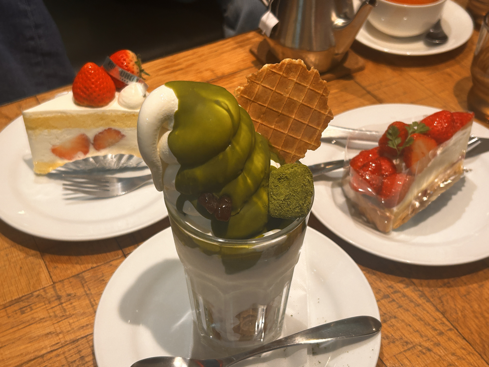

ROBLOX, CRYING, AND FINALLY MAKING FRIENDS (´༎ຶོρ༎ຶོ`)!
2026.04.18
Hello blog. Sorry for the late post. I was so tired and ended up taking a huge nap, then I went on Youtube and watched a book reviewer’s review of a terrible book. Don’t worry, I’ll never forget to post. It’s always on my mind, topics to talk about here. Anyway, lets get into it, shall we?
fun times in the ‘saka w/ new friends
Yesterday, Nhu invited me to eat dinner with two of the other people in my classroom. The taiwanese guy and his wife were also invited after class. Then, they invited their friend from China. A total of 7 people were in our party and Nhu was struggling to find a place for all of us. We ended up going to the Daimaru/Parco food area and eating pork katsu.
It was a fun time. We conversed, we laughed, we learned new things about each other like that it was Emi’s (German) 20’th birthday on the fifth of May, so we made plans to go to a beach and light fireworks the weekend before then.
Another thing is that the two Taiwanese people sitting at the table did not speak a lick of English, so the Chinese guy had to translate for them which entailed them practically having a town meeting whenever one of us English speakers would talk. It was so silly.
Eating with them made me realize that I am a slow eater. When everyone was done, I was halfway through my plate. They even asked me, “do you not like it?” I loved it. It was incredible. I didn’t have an explaination for them except that I’ve been infected by my brother’s girlfriend who eats at the pace of a 2-month-old baby. After rushing to stuff my stomach, we took a photo together:

Actually, maybe I was taking forever because I was too busy taking arbitrary videos:
Just as I thought we all were done and returning home, Nhu found a dessert place for all of us to go to. Jessica (Italy) also invited her friend along with us. Now, we were eight people sutffed into this place. It was an actual vibe.
When I was looking through the menu, I said “what is the cheapest thing here?” and Nhu responded “we can share something.” I was like OMG! That is actually perfect! I didn’t think anyone heard me, so it was extra heartwarming. Like her child, I told Nhu that I wanted the matcha parfait.
After a long while of more chatting, laughing, and enjoying each other’s company, we got the desserts and everyone whipped out their camera’s and began snapping away. I felt peer pressured to do the same:

Me and Nhu shared the parfait and it was pretty good. I appreciated my time with every person here. It was so refreshing. I truly loved getting to know everyone and I hope we do more stuff like this in the future.
OMG JUSTIN BEIBER.
Today I cried over Justin Beibers Coachella set. After reading “The Love Song of Johnny Valentine” by Teddy Wayne, I’m exposed to how much shiz Justin Beiber went through as a literal eleven-year-old. At that age, I was probably crying over some Roblox game. Seeing him grown and owning that era was so incredible and inspiring that it made me cry. Finally after 19 years of knowing JB, I can now say I am a BELIEBER! I LOVE YOU, JUSTIN!
Okay. I have to go get this haircut now :P. BYE!
HAIRCUT PIC
Okay. I’m back. As promised, here’s the haircut (bejeweled by my model face):

He was telling me how he plays Roblox with his son to protect him from anything explicit, and I was like "so you're like a Roblox bodyguard?" He confirmed.
He gave me bangs and “layers.” He said my hair will evolve like a Pokemon as the week goes by, so my hair will not look the same I guess. Also, he gave me this stuff called “hair mayonnaise.” lol.